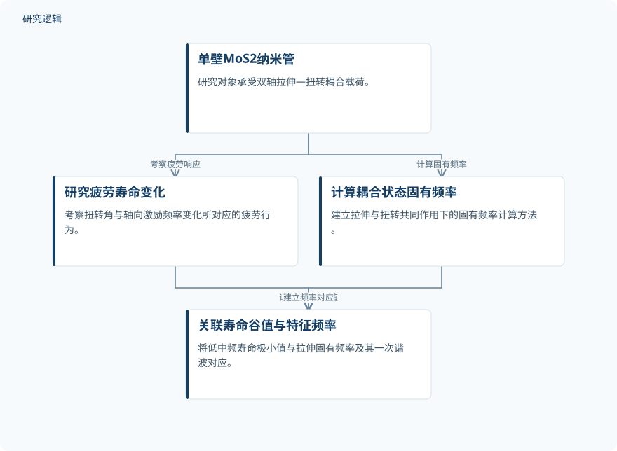

摘要解读
单壁二硫化钼纳米管双轴拉伸—扭转耦合疲劳共振
Biaxial tension-torsion coupling fatigue resonance of single-walled MoS2 nanotubes.
解读更新 2026-11-14 15:19 · 依据公开摘要整理，未核验全文细节
拉伸与扭转共同作用时，单壁MoS2纳米管的疲劳寿命为何会在某些激励频率附近明显降低？这项研究将寿命变化与固有频率、能量耗散联系起来，为理解柔性纳米电子器件中的疲劳可靠性提供了线索。
文章目录
耦合载荷下，疲劳寿命不只随频率平滑下降
纳米管的疲劳特性关系到柔性纳米电子器件的可靠性。本文关注单壁MoS2纳米管在双轴拉伸—扭转耦合载荷下的疲劳行为，核心问题是：扭转角和轴向激励频率如何影响寿命，以及其中是否存在与系统固有振动相关的低寿命区域。
计算耦合状态的固有频率，寻找寿命谷值的对应关系
摘要明确介绍，作者研究了不同扭转角和轴向激励频率下的疲劳行为，并建立了拉伸与扭转共同作用时的固有频率计算方法。研究进一步将寿命极小值与固有频率及其谐波对应，并分析疲劳能量在激励频率和固有频率处的分布与耗散。摘要未交代具体计算模型或测试实施方式。
依据摘要整理的耦合疲劳研究关系


仅概括摘要明确描述的载荷、疲劳研究与频率对应分析，不代表论文原图或具体实验流程。
下载 SVG图示关系说明
实线表示相邻阶段的信息流，虚线表示跨阶段联系或反馈。
单壁MoS2纳米管 → 研究疲劳寿命变化：考察疲劳响应；单壁MoS2纳米管 → 计算耦合状态固有频率：计算固有频率；研究疲劳寿命变化 → 关联寿命谷值与特征频率：识别寿命极小值；计算耦合状态固有频率 → 关联寿命谷值与特征频率：建立频率对应
低中频出现寿命谷值，高频转为宽平台
摘要报告，疲劳寿命总体随扭转角和轴向激励频率增大而降低，但频率响应并非单调：在所研究的各扭转角下，低至中频范围均出现两个明显的寿命极小值。作者将第一个极小值对应于拉伸固有频率，第二个对应于其一次谐波。
高频区呈现不同特征：疲劳寿命迅速下降，形成较宽的低值平台。作者认为，这一区域主要受应变率效应支配，而不是由尖锐的谐波共振主导。因此，不能把不同频段的寿命降低都归结为同一种共振机制。
在能量层面，摘要指出疲劳能量在激励频率和固有频率处发生分布与耗散。当激励频率匹配固有频率时，作者将寿命极小值归因于固有频率处大部分声子的耗散。这为频率匹配与疲劳寿命之间的联系提供了机制解释。
摘要不足以界定适用尺寸、比较基准与验证范围
本解读仅依据完整摘要。摘要未报告纳米管尺寸与结构参数、样本或重复次数、载荷幅值、频率范围及寿命判据，也不足以判断与单独拉伸或扭转载荷的比较是否充分。固有频率计算方法的误差、机制解释的验证范围，以及器件服役条件下的适用性，均需进一步阅读原文确认；这些信息未在摘要中出现，不等于论文没有开展相关工作。
阅读启发：把共振谷值与应变率平台分开理解
阅读启发：理解这项工作的关键，不只是记住“频率升高、寿命降低”，而是关注寿命曲线中不同区域对应的机制。进一步阅读时，可重点核对耦合载荷如何改变固有频率，以及作者如何区分共振耗散与应变率效应。摘要提出了面向器件寿命的指导意义，但并未报告器件寿命改善已获验证。
以上为本站阅读启发与建议，不是论文已验证的结论。